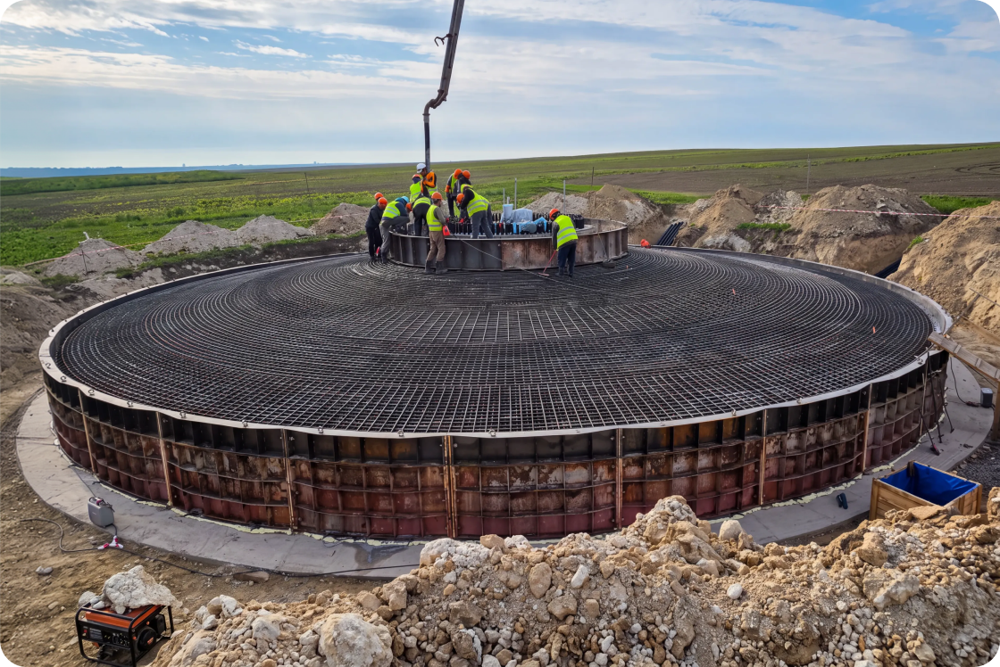

01
Сьогодні, напередодні надважкої зими, кожна українська сім’я потребує світла й тепла у своїх домівках. Це величезна відповідальність. Наші працівники усвідомлюють усю серйозність ситуації, і попри складні обставини, щодня виконують свою роботу, розуміючи її значення для людей.

02
01

"Сервіс"
об’єднує геологічну розвідку, буріння і видобуток, а також будівельні та сервісні компанії.
02

"Еко-Оптіма"
розвиває сонячну, вітрову й газопоршневу генерацію, а також проєкти малої гідроенергетики.
03

Багато працівників пішли добровольцями в ЗСУ, що спровокувало певний кадровий дефіцит. До слова, керівник газовидобувного напряму Степан Козицький теж долучився до лав захисників України.
Війна докорінно змінила підходи до розроблення й реалізації енергетичних проєктів. Тепер, окрім економічної доцільності та технічних параметрів, важливо оцінювати безпекові загрози, логістичні й ресурсні можливості, надійність інфраструктури і здатність реагувати на зміну обставин.
04
Як ілюстрацію в компанії наводять історію будівництва і запуску Сколівської ВЕС. У березні 2022 року партнер із ЄС не зміг доставити і змонтувати турбіни для майбутньої вітростанції, посилаючись на війну як форс-мажорну обставину. Інші європейські компанії на той момент також не ризикнули взяти такий складний проєкт. Окрім того, після початку повномасштабної війни стало вкрай складно застрахувати майно, а транспорт, необхідний для перевезення обладнання, перебував у лізингу, що додатково ускладнювало його використання.

Залишалося два варіанти: заморозити проєкт і чекати, поки війна закінчиться і все стабілізується, або шукати нестандартні рішення. Компанія обрала другий варіант: спеціально придбала 700-тонний кран для монтажу турбін і самостійно організувала їхню складну логістику. Інвестиції у власну автономність стали важливою частиною політики розвитку групи.
05

01
Команда –
це серцевина кожного проєкту групи. Компанія усвідомлено підходить до роботи з людьми, кадровим потенціалом і резервом. Кваліфікований будівельник, енергетик чи буровик сьогодні в Україні дуже важливі, тому компанія налагодила системну співпрацю з українськими університетами, зокрема університетом нафти і газу в Івано-Франківську, університетом Івана Франка та Львівською політехнікою.
02
Працівники компанії
це серцевина кожного проєкту групи. Компанія усвідомлено підходить до роботи з людьми, кадровим потенціалом і резервом. Кваліфікований будівельник, енергетик чи буровик сьогодні в Україні дуже важливі, тому компанія налагодила системну співпрацю з українськими університетами, зокрема університетом нафти і газу в Івано-Франківську, університетом Івана Франка та Львівською політехнікою.
03
Окремий напрямок –
це серцевина кожного проєкту групи. Компанія усвідомлено підходить до роботи з людьми, кадровим потенціалом і резервом. Кваліфікований будівельник, енергетик чи буровик сьогодні в Україні дуже важливі, тому компанія налагодила системну співпрацю з українськими університетами, зокрема університетом нафти і газу в Івано-Франківську, університетом Івана Франка та Львівською політехнікою.